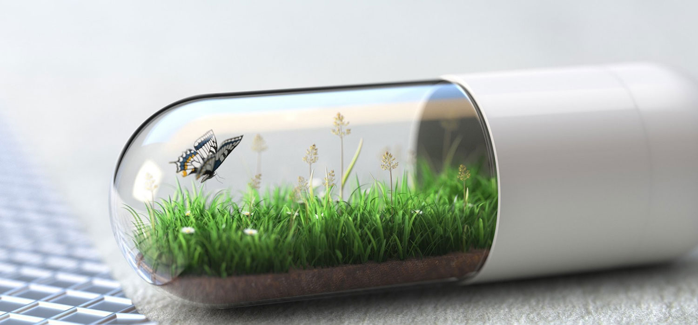

Kada botoks nije pravo rešenje?
Uvod
Botoks je jedan od najpoznatijih estetskih tretmana i često se doživljava kao brzo rešenje za gotovo sve promene na licu. Međutim, botoks ima jasno definisano delovanje i ograničenja. Razumevanje situacija u kojima botoks ne može dati željeni efekat ključno je za postizanje prirodnih i dugoročno održivih rezultata. U praksi estetske medicine upravo pogrešna indikacija predstavlja najčešći razlog nezadovoljstva pacijenata.
Kako botoks zapravo deluje
Botoks deluje isključivo na mišićnu aktivnost. Njegova osnovna funkcija je privremeno opuštanje mišića koji su odgovorni za nastanak dinamičkih bora — bora koje se pojavljuju tokom mimike, poput mrštenja, podizanja obrva ili smejanja. Kada se mišić opusti, koža iznad njega postaje mirnija i bore se ublažavaju ili nestaju.
Zbog ovakvog mehanizma delovanja, botoks nema efekta na promene koje nisu direktno povezane sa mišićnom kontrakcijom. Upravo tu nastaje granica između onoga što botoks može da reši i onoga gde je potreban drugačiji pristup.
Situacije u kojima botoks ne daje rezultat
Postoje jasne situacije u kojima botoks ne može postići zadovoljavajući estetski efekat:
- Statičke bore – bore koje su vidljive i kada lice miruje, najčešće su posledica gubitka volumena ili elastičnosti kože. Botoks ne može popuniti ovakve bore jer ne utiče na strukturu kože.
- Gubitak volumena lica – u predelu obraza, slepoočnica ili usana, problem nije u mišićima već u smanjenju potkožnog tkiva. U tim slučajevima botoks ne može vratiti punoću niti poboljšati konture.
- Opuštena koža – kod izraženog opuštanja lica, naročito u donjoj trećini, botoks nema efekta jer ne zateže kožu. Takve promene zahtevaju drugačije terapijske pristupe.
- Asimetrije koje nisu mišićnog porekla – strukturne asimetrije lica ne mogu se korigovati botoksom.
Najčešće greške u očekivanjima
Jedna od najčešćih grešaka jeste očekivanje da botoks može da zameni sve druge estetske tretmane. Pacijenti često dolaze sa željom da se jednim tretmanom reše duboke bore, opuštenost kože i gubitak volumena, što botoks objektivno ne može da postigne.
Druga česta greška je primena botoksa kod osoba sa već izraženom opuštenošću kože, gde dolazi do blagog pogoršanja izgleda, jer se mišići dodatno opuste, a koža ostane bez oslonca.
Koje su realne alternative botoksu
U situacijama kada botoks nije adekvatno rešenje, postoje druge terapijske opcije koje daju bolje rezultate:
- Hijaluronski fileri – koriste se za nadoknadu volumena i popunjavanje statičkih bora.
- Biorevitalizacija i mezoterapija – poboljšavaju kvalitet kože, hidriraju i podstiču regeneraciju.
- PRP terapija – stimuliše prirodne regenerativne procese i poboljšava teksturu kože.
- Lifting tretmani (hirurški ili nehirurški) – kod izraženog opuštanja kože pružaju dugotrajnije i stabilnije rezultate.
Kako se donosi prava odluka
Prava odluka o tretmanu zasniva se na detaljnoj proceni anatomije lica, kvaliteta kože i realnih ciljeva pacijenta. Iskusni lekar ne posmatra lice kao skup izolovanih problema, već kao celinu u kojoj su mišići, koža i potkožno tkivo međusobno povezani. Upravo takav pristup omogućava da se izabere terapija koja daje prirodan rezultat, bez preterivanja i nepotrebnih intervencija.
Zakažite konsultaciju i saznajte da li je botoks pravi izbor za vas ili postoji bolja alternativa za vaše lice.
Email: office@crystalmedical.rs | Telefon: +381 60 190 9309
Zakažite konsultaciju